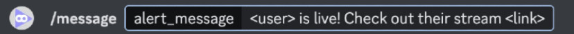
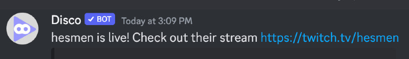

Disco is a fast, customizable Twitch-live notification bot.
Easily configurable to monitor multiple Twitch channels and notify your server whenever one goes live.
Simply invite it to your server, and it will guide you through the setup process.
Quick Start
After running /setup, choose where DiscoTwitch posts alerts with /channel:

Then /follow Twitch streams to get notified when they go live:

Easily customize your alerts using /message

With the above command, alerts would look like this:

Visit the Documentation for more info on commands and setup.
Bug Reports/Support
Visit the official Discord for help and to report bugs.
Consider leaving a review on top.gg